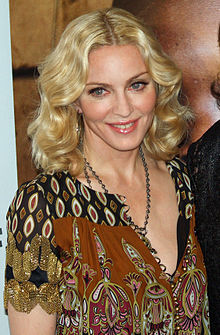

Мадонна(певица)
Детство и карьера
Мадонна родилась в штате Мичиган, США. Её мать, Мадонна Луиза (пр. 1933—1963) (в девичестве Фортин, родилась 11 июля 1933[3]) вела род от канадских французов; отец, Сильвио «Тони» Чикконе (родился 6 июня 1931[4]), американский итальянец, работал инженером-дизайнером на заводе Chrysler/General Motors. Мадонна стала третьим ребёнком из шести детей в семье.
Мадонна выросла в католической семье в пригороде Детройта. Она — дальняя родственница Камиллы, герцогини Корнуольской[источник не указан 63 дня]. По собственному признанию певицы, она никогда не была всеобщей любимицей — ещё в школе её считали девочкой «с приветом».
«Со мной обходились жестоко, но я не позволяла вытирать о себя ноги и только подчёркивала свою чужеродность».
Мать Мадонны умерла от рака груди в 30 лет в 1963 году. Её отец женился на горничной семьи Джоан Густафсон, и у них было двое детей, Дженнифер и Марио. Мадонна убедила отца позволить ей брать уроки балета. Мадонна закончила школу Святого Фредерика, школу Святого Эндрю и West Middle School. Она поступила в школу Rochester Adams High School, став полноценной ученицей и членом группы поддержки. Мадонна получила танцевальное образование в Университете Мичигана после окончания школы. После того, как её преподаватель по балету убедил её продолжать карьеру танцовщицы, Мадонна покинула университет в конце 1977 года и переехала в Нью-Йорк. У неё почти не было денег, и некоторое время она жила в нищете, работая в Dunkin’ Donuts и с танцевальными группами. В интервью Мадонна сказала:
«Когда я приехала в Нью-Йорк, это было впервые, когда я летела на самолёте, впервые даже вызывала такси, — всё было впервые. И я приехала с 35 долларами в кармане. Это был мой самый отважный поступок в жизни».
Во время выступлений в качестве танцовщицы для французского артиста диско Патрика Эрнандеса (Patrick Hernandez) в его мировом туре 1979 года, Мадонна была влюблена в музыканта Дэна Гилроя, с которым она позже создала свою первую рок-группу Breakfast Club. В ней она пела и играла на ударных и гитаре, перед тем как создала группу Emmy в 1982 году с ударником и бывшим парнем Стефеном Брэйем. Они с Брэйем писали и выпускали танцевальные песни, которые привлекли внимание ночных клубов Нью-Йорка. Диджей и продюсер Марк Каминс был впечатлён её демозаписями, поэтому он познакомил Мадонну с основателем Sire Records Сэймуром Стэйном.
Начало карьеры
В течение следующего года Мадонна записала новые демозаписи в танцевальном стиле и при помощи «Готем Продакшинз» пыталась их распространить. Вскоре Мадонна ушла из компании и, решив начать всё сначала, с помощью Брэя сделала ещё одну демонстрационную запись. На этот раз вошли четыре их «уличных» танцевальных мелодии: Everybody, Ain’t No Big Deal, Stay и Burning Up. Мадонна в одиночку развернула кампанию, направленную на то, чтобы плёнку прослушали нужные люди. Для этого она избрала «Данстерию» (Danceteria) на Манхеттене, которая продолжала традиции заведений, где пересекались пути прессы, таких как «Студия 54», «Мадд-Клаб» и «Ксенон». Открытая в 1981 году одним из импрессарио ночной жизни Рудольфом, «Данстерия» быстро прославилась как суперсовременное заведение, о котором больше всего говорили и писали. Наиболее значительным знакомством Мадонны в «Данстерии» был, без сомнения, Марк Кейминс (Mark Kamins), который был там единственным диск-жокеем, и вскоре его зажигательный стиль завоевал ему славу короля диск-жокеев «новой волны». Через несколько дней совместной жизни Мадонна не постеснялась подсунуть Кейминсу свою демонстрационную запись. Он прослушал её и представил в «Данстерии». Толпа пришла в восторг от записи, и Кейминс убедился, что у Мадонны есть все задатки звезды.
Кейминсу уже доводилось подыскивать исполнителей для репертуально-исполнительского отдела фирмы «Айленд Рекордз», которой он незадолго до того устроил контракт с ирландской группой «U2», чьи пластинки в середине 1980-х годов расходились самыми большими тиражами из всех выпускавшихся этой фирмой. Кассету Мадонны он отнёс Крису Блэкуэллу, исполнительному директору «Айленд», который сразу же её завернул. Тогда Кейминс предпринял следующий шаг, доставил кассету в «Уорнер Бразерс» (Warner Bros). Он подружился с подающим надежды художником и ответственным за репертуар в «Уорнер Сир» (Warner Sire) Майклом Розенблаттом. Пока большинство фирм грамзаписи, отпихивая друг от друга, гонялись за каким-нибудь очередным рыкающим панк-рокером, затянутым в кожу, Розенблатт культивировал такие танцевальные команды, как «B-52» или английский дуэт Wham!. Кейминс позвонил Розенблату и пригласил зайти в «Данстерию» познакомиться с молодой певицей, от которой, как пообещал Кейминс, Майкл «обалдеет». Через несколько дней Розенблатт на правах хозяина повёл приехавших из Англии Wham! в «Данстерию»; ведущий вокалист группы Джордж Майкл заметил симпатичную молодую женщину (светлые волосы которой уже начали темнеть у корней) в стильной кепочке и бросающихся в глаза непарных чулках. Ещё до того, как Кейминс их познакомил, Розенблатт понял, что эта женщина «невообразимого вида» и есть Мадонна. Он назвался, представил Джорджа Майкла, а затем пригласил её зайти к нему в контору с демонстрационной кассетой.
Первый сингл
Розенблатт, Кейминс и Мадонна набросали пункты контракта. По условиям договора Мадонна получала аванс в 5000 долларов, а за каждую написанную песню — гонорар и плату за публикацию в размере 1000 долларов. В потенциальных возможностях своей находки президент «Уорнер Сир» Сеймур Стайн и Розенблатт, видимо, были уверены, но не настолько, чтобы пойти ва-банк и выпустить сразу альбом. Розенблатт разработал план продвижения Мадонны за счёт выпуска танцевальных синглов.
Первым синглом должна была стать больше всего понравившаяся Стейну песня Ain’t No Big Deal с демонстрационной кассеты, на обратной стороне Everybody, на которую с самого начала не возлагали надежд. Продюсером для работы над первой пластинкой Мадонны стал Марк Кейминс.
Результатом их двухнедельной работы стал сингл, который, по их убеждению, должен был в мгновение ока вознести её в число лучших сорока исполнителей. Но, прослушав то, что она считала стопроцентным хитом, Розенблатт приуныл. Ain’t No Big Deal такой не оказалась. Времени на перезапись не было, они взяли и поместили Everybody и на обе стороны сингла. На обложку сингла решили не помещать фотографию Мадонны, так как многие, слушая её песни, думали, что она негритянка. Таким образом можно было выиграть большую аудиторию.
Неординарное решение Розенблатта окупилось сторицей. В считанные недели Everybody взмыла в верхние строчки таблиц популярности танцевальной музыки.
Фирма была настолько довольна неуклонным продвижением композиции Everybody в верхние строчки таблиц танцевальных хитов и зажигательными выступлениями Мадонны в «Дансэтерии», что решила записать её на видео, правда, с оговорками. Розенблатт и шеф «Сир» Сеймур Стейн сошлись на том, что видеоклип надо ориентировать не на массовую аудиторию, а непосредственно на посетителей танцевальных клубов по всей стране. Что до затрат, то из миллионов «Уорнер» они выделили на первый видеоклип Мадонны ничтожную сумму в 1500 долларов, что составляло менее одного процента ассигнований на видеосъёмки Майкла Джексона, Принца, Duran Duran, Лайонела Ричи, «Полис» или других звёзд того времени. Чтобы первый видеоклип Мадонны был снят по графику и в пределах отпущенных средств, они выбрали в продюсеры Эда Стейнберга, сладкоречивого президента компании «Рок Америка» и поставщика видеоклипов для сотен клубов от побережья до побережья. Он уже был немного знаком с Мадонной. Разрекламированная клипом, композиция Everybody взлетела на 3 место в таблицах танцевальных хитов, а потом перекочевала на 107 место в главном чарте журнала «Биллборд».
Второй сингл
Чтобы оправдать значительные расходы на производство и распространение альбома, Сеймур Стейн хотел убедиться, что успех Everybody не случаен и что Мадонне удастся очаровать не одних лишь посетителей клубов. Чтобы прощупать почву, он дал добро на выпуск 12-дюймового макси-сингла. Если его успех хоть отдалённо напомнит успех Everybody, то дебютному альбому Мадонны будет дан зелёный свет.
Сознавая, что поставлено на карту, Мадонна встретилась с представителями «Уорнер» и настояла на том, чтобы вместо Кейминса был подобран более опытный продюсер. Одним из таких был Регги Лукас. Мадонна хотела заполучить именно его. Не теряя времени даром, новый продюсер Мадонны написал для неё хит. Второй сингл «Burning Up» тоже достиг в таблицах танцевальных хитов 3 места, повторив успех Everybody, и Розенблатту дали добро на выпуск альбома.
[править]1982—1985: Всемирный успех. Like A Virgin
Внешний вид Мадонны, манера одеваться, образы в музыкальных видео оказали большое влияние на девушек начала 1980-х годов. Следующий альбом певицы, противоречивый Like a Virgin («Словно Дева»), стал первым её альбомом, добравшимся до вершины альбомного чарта США. Его коммерческий успех последовал после выхода одноимённого сингла, надолго ставшего визитной карточкой Мадонны, продержавшись на первом месте хит-парада Billboard 6 недель. Альбом разошёлся тиражом 19 миллионов по всему миру, из которых только в США 10 миллионов, получив бриллиантовый сертификат и став самым успешным студийным альбомом Мадонны на её родине до настоящего времени. Певица исполнила заглавный трек на первой церемонии награждения MTV Video Music Awards в свадебном платье и знаменитом поясе, с надписью Boy Toy. Like A Virgin находится в списке 200 Выдающихся альбомов всех времен Национальной Ассоциации Распространителей Записей и Зала Славы Рок-н-Ролла в США.
В 1985 году Мадонна приняла участие в съёмках нескольких фильмов, начав с небольшой роли клубной певицы в фильме Vision Quest. Звуковая дорожка к фильму содержит второй сингл номер 1 в США, Crazy For You. Чуть позже Мадонна появилась в фильме «Отчаянные поиски Сьюзен». Фильм представил миру песню Into The Groove, первый сингл № 1 в Великобритании. Мадонна отправилась в свой первый гастрольный тур по США, названный The Virgin Tour совместно с The Beastie Boys. Во время съёмок клипа на песню Material Girl у Мадонны стали зарождаться отношения с актёром Шоном Пенном. Название песни («Материальная девочка») надолго закрепилось за самой певицей. В июле этого года журналы «Пентхаус» и «Плейбой» опубликовали несколько черно-белых фотографий обнаженной певицы, сделанных в конце 1970-х годов. Мадонна, в соответствии с законом, отвоевала право не публиковать данные материалы. Позже, в самый разгар критики в сторону исполнительницы на благотворительном концерте Live Aid, Мадонна негативно высказалась по поводу СМИ, и заявила, что не снимет с себя и пиджак, так как впоследствии через несколько лет это может быть использовано против неё.
1985—1991: True Blue, Like a Prayer и Blond Ambition Tour
Мадонна во время Blond Ambition World Tour в 1990 году
Третий альбом Мадонны True Blue был выпущен в 1986 году. Журнал «Роллинг Стоун» охарактеризовал его как «звучащий от сердца». В альбом вошла баллада Live to Tell, написанная певицей для фильма At Close Range, в котором снимался её тогдашний муж Шон Пенн. В первую пятерку попали сразу пять песен с альбома: Live to Tell, Papa Don’t Preach, Open Your Heart, True Blue и La Isla Bonita.
Песня La Isla Bonita была написана Патриком Леонардом и Брюсом Гаитсчем. Сперва её предложили Майклу Джексону (она бы вошла в его альбом Bad), но тот решил, что песня не в его стиле и отказался от неё. Тогда песню предложили Мадонне. Она взялась её исполнять, но переписала часть текста, заслужив упоминания в соавторах[5].
Сам же альбом сделал Мадонну суперзвездой мирового масштаба, впервые в истории поднявшись на вершину хит-парадов в 28 странах мира, что позволило «Книге рекордов Гиннеса» назвать это абсолютно беспрецедентным. На сегодняшний день продано порядка 26 миллионов[источник не указан 35 дней] экземпляров этого альбома, сделав его самым продаваемым студийным альбомом певицы. В этом же году Мадонна снялась в фильме «Шанхайский сюрприз», а также впервые для себя появилась на театральной сцене в спектакле «Гусь и Томтом», и там и там вместе с Шоном Пенном.
В 1987 году Мадонна снялась в фильме «Кто эта девушка», сделав четыре песни к его саундтреку, включая заглавную композицию с таким же названием, а также песню Causing a Commotion. Последняя добралась до второго места в чарте США. В этом же году певица отправилась в тур Who’s That Girl («Кто эта девушка»). Данный тур встретил похвалы за инновационные наряды певицы. В конце 1987 года выходит сборник ремиксов You Can Dance. На сегодняшний день это один из наиболее успешных ремикс-альбомов в истории музыки. В 1988 году, в городе Пацентро, была поставлена 4-метровая статуя Мадонны. Статую власти города воздвигли, чтобы отметить тот факт, что предки певицы жили в этом городе. Брак певицы и Шона Пенна также закончился в этом году. Заполнив бумаги о разводе в декабре 1989 года, пара разошлась на Новый год 1990 и официально была разведена в январе будущего года.
В начале 1989 года Мадонна подписала контракт с компанией «Пепси». Новая песня Like a Prayer дебютировала в рекламе компании. Видеоклип к песне содержал множество католических символов, таких как стигмата и горящий крест. Двусмысленные отношения героини Мадонны с чернокожим священником повергли в шок элиту Ватикана. Из-за схожести рекламного видео Пепси и непосредственно клипа на песню, компания не смогла оправдаться в глазах публики и была неуместной. Спонсорский контракт с Мадонной был расторгнут, однако певица проявила себя как талантливая бизнес-леди и получила полагающуюся ей сумму в пять миллионов долларов. Разгоревшийся скандал однако пошёл на пользу Мадонне, песня Like A Prayer на 11 лет стала наиболее успешной в карьере певицы. Сингл разошёлся тиражом в 5 миллионов экземпляров. Одноименный альбом вышел в конце 1989 года. Он был написан в сотрудничестве с Патриком Леонардом и Стефаном Бреем. Журнал Rolling Stone охарактеризовал альбом «… настолько близким к искусству, насколько поп музыка может быть». В альбоме затрагивались религиозные и философские мотивы, впервые в своей карьере певица рассказывала о своих отношениях с умершей матерью в песне Promise to Try. Также был записан дуэт с Принсом Love Song. Поднявшись на первую строку в чарте Billboard 200, альбом разошёлся тиражом в 4 миллиона экземпляров в США и 7 миллионов в остальном мире.
В 1990 году Мадонна снова шокировала общественность, когда клип на её новую песню Justify My Love, снятый модным фотографом Жаном Баптистом Мондино, был запрещен к показу по телевидению в силу своей чрезмерно эротической природы.
The Immaculate Collection
The Immaculate Collection — первый сборник хитов Мадонны, был выпущен 7 ноября 1990, сборник также включал в себя несколько новых песен, в том числе и Justify My Love. The Immaculate Collection считается самым успешным релизом Мадонны, он разошелся тиражом больше чем 40 млн экземпляров[6]; также считается одним из самых продаваемых альбомов всех времен, и входит в 500 величайших альбомов всех времён по версии журнала Rolling Stone.
1992—1994: Компания Maverick, книга «Секс»
В 1992 году Мадонна основывает свою собственную компанию работающую в сфере развлечений — Maverick. Компания Maverick занимается производством фильмов (Maverick Films), выпуском музыкальных альбомов (Maverick Records), а также выпуском книг. Это было совместное предприятие с Time Warner. Первым продуктом совместного предприятия стала книга «Секс», содержащая иллюстрированные сексуальные фантазии Мадонны. Книга вызвала очень неоднозначную реакцию в обществе, но тем не менее было продано 1,5 млн экземпляров по $50 каждая. В то же время компания Maverick Records выпускает пятый студийный альбом Мадонны — Erotica, который занял второе место в американских чартах, а также третье место в Billboard Hot 100 chart. Несмотря на то, что на тот момент это был лучший альбом певицы, он был прохладно принят критиками[7].
1994—1999: Альбомы Bedtime Stories, Ray of Light
Отзывы в прессе о проделанной, далеко неоднозначной и шокирующей работе Мадонны были далеко не самые доброжелательные, так что к следующей пластинке Bedtime Stories Мадонна снова сменила стиль. Заглавный трек Bedtime Story был написан для Мадонны певицей Бьорк. После этого Мадонна снялась в главной роли в экранизации мюзикла Эндрю Ллойда Уэббера «Эвита», где сама исполнила все песни. Уже после выхода фильма у певицы стали заметны изменения — улучшился вокал и певица приняла более спокойный внешний стиль. Видимо в эти годы певица углубляется в иудаизм и изучение каббалы. Новая полнометражная работа певицы Ray of Light, записанная совместно с английским электронным музыкантом, стала самой её успешной пластинкой со времен Like a Prayer.
В 1995 году за два месяца сменила два агентства, занимающихся её творческими делами. Агентство, с которым проработала около 10 лет она обвинила, в том, что оно не сумело сделать из неё знаменитую киноактрису, и перешла в другое, очень популярное агентство William Morris. Но скоро подписала контракт с агентством International Creative Management[8].
2000—2008: Королева поп-музыки
Выступление Мадонны в Филадельфии в рамках мирового турне Confessions Tour (июль 2006 года).
Следующий альбом певицы, Music, выпущенный в 2000 году, также был чрезвычайно успешным экспериментом в жанре танцевальной электронной музыки. Сделанный в схожем ключе альбом American Life, однако, не вызвал того же энтузиазма. Особенно негативно в прессе отзывались о попытках певицы читать рэп в заглавном треке альбома — и большая часть критиков, кажется, совершенно упустила из виду иронический характер этого речитатива. После относительного провала American Life, несколько сглаженного успехом сингла Love Profusion, Мадонна решила, что настала пора для очередной операции по перемене звучания. Пригласив английского музыканта Стюарта Прайса, она записала альбом неонового нео-диско Confessions on a Dance Floor и вернула себе позиции королевы танцпола и чарта, не в последнюю очередь благодаря мега-хиту Hung Up, построенному на сэмпле из группы Abba. Для работы над следующей пластинкой Hard Candy Мадонна обратилась к главным хит-мейкерам второй половины 2000-х годов, Тимбалэнду и Джастину Тимберлейку. Первым синглом с нового альбома стал дуэт с Тимберлейком 4 Minutes[9].
2009—2011: Модельер, режиссёр, предприниматель
6 ноября Мадонна приняла участие в рекламной фотосессии для коллекции весна-лето 2010 модного дома Dolce & Gabbana. Ответственным за съёмку был назначен Стивен Кляйн. По признанию дизайнеров, участие Мадонны в рекламе новой коллекции, — это осуществление их мечтаний. Совместно со своей дочерью Лурдес, певица разработала линию молодёжной одежды для Ralph Lauren — Material Girl.
Помимо всего, в рамках тура Sticky & Sweet Tour был выпущен одноимённый сборник концертных записей и видеоверсия турне, позднее состоялся выпуск третьего сборника лучших песен Мадонны Celebration. Она также стала режиссёром и сценаристом фильма «Мы. Верим в любовь», который вышел в прокат в декабре 2011 года[10], а мировая премьера состоялась 1 сентября 2011 года на Венецианском кинофестивале[11].
Также Мадонна открыла сеть собственных фитнес-клубов, названных в честь её альбома Hard Candy, первый центр открылся в городе Мехико, а открытие второго состоялось в Москве в 2011 году.
После землетрясения на Гаити, певицей были пожертвованы $250 000 в фонд пострадавших.
[править]2012 — настоящее время: Альбом MDNA
Мадонна выступила на 46 игре Супер Боул, который был показан на телеканалe NBC 5 февраля 2012 года. Она исполнила попурри из своих песен: «Vogue», «Music», «Open Your Heart», «Express Yourself» и «Like a Prayer». Она также представила свой новый сингл «Give Me All Your Luvin’» в компании с Ники Минаж и M.I.A..
Двенадцатый альбом певицы MDNA был выпущен 26 марта 2012 года.
Личная жизнь
Мадонна вышла замуж за актера Шона Пенна (см. выше) в день её рождения в 1985 году
Её первый «взрослый» роман с актёром Шоном Пенном привел в 1985 году к свадьбе. Однако неистовый интерес прессы и телевидения к их браку, объяснявшийся вниманием к Мадонне, а не к Шону Пенну, которого газеты начали называть не иначе как «мистер Мадонна», стал нестерпим для супруга певицы. Началось их соперничество за внимание публики и прессы, приведшее к выставленной на всеобщее обозрение супружеской склоке. После четырёх лет совместной жизни они развелись. Роман Мадонны с актёром Уорреном Битти, известным волокитой и бабником, также ни к чему не привёл.
В какой-то момент пошли разговоры, что она сблизилась с комедийной актрисой Сандрой Бернхард. Мадонна заявила: «Я не лесбиянка, но мне казалось ниже собственного достоинства говорить об этом. Я считала, что даже если бы я действительно была лесбиянкой, то что из этого? Какие проблемы? Это ведь никого не касается!» Также модель Дженни Шимицу утверждает, что у неё были лесбийские связи с Мадонной.
О своем же личном спортивном тренере и начинающем актёре Карлосе Леоне, 30-летнем отце её дочери Лурдес, Мадонна сказала, что не видит никакой необходимости вступать с ним в брак, так как она «абсолютно счастлива нынешним состоянием дел»[12].
В сентябре 2000 года она родила сына от своего второго мужа — английского режиссёра Гая Ричи. Впервые Мадонна встретилась с Ричи летом 1998 года в уилтширском поместье жены Стинга Труди Стайлер, которая вместе с Питером Мартином и Стивеном Марксом являлась инвестором фильма. Позже Ричи признавался, что приехал на прием именно потому, что хотел познакомиться с Мадонной. Мадонна с улыбкой говорила: «Похоже, у него уже что-то было на уме!» (Мадонна согласилась записать саундтрек к фильму Ричи на своей студии «Маверик», так что вполне возможно, что он просто хотел решить деловые вопросы.)
В начале 1999 года Мадонна и Гай стали появляться на публике вместе. И одновременно с этим в прессе появились сообщения о том, что Мадонна хочет иметь ещё одного ребёнка. Гай окончательно порвал с Ребеккой Грин, которая заявила, что их отношения «подошли к естественному завершению», но добавила: «Мадонна знала об этом и приложила к нашему разрыву руку. Не могу сказать, когда мы расстались окончательно, но это было довольно трудное время — не для меня, для неё (Мадонны). Я была не слишком доброй».
После 7 лет супружеской жизни Мадонна и Гай Ричи решили расстаться. Это случилось 15 октября 2008 года[13].
<
назад